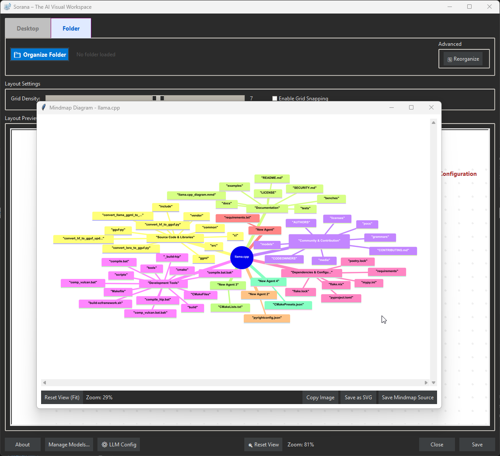

Sorana
Visual AI Workspace
Inspiration
We were frustrated by the limitations of traditional file managers. For decades, we've been forced to organize digital lives into rigid, list-based hierarchies and nested folders that hide information rather than reveal it. Our brains don't work in lists; they work through associations and spatial relationships. We wanted to build a system that reflects this—moving away from "where did I save that file?" to "what is this project about?" by using semantic and visual grouping to reveal the hidden structure of our data.
What is Sorana?
Sorana solves the problem that files are hidden in folders, AI forgets everything between sessions, and every task is manual. Find files by topic on a visual canvas instead of navigating folder paths. Chat with documents and web content to get instant answers. Automate file tasks — create, move, edit, delete — through conversation. Process scanned documents with OCR so they become searchable for AI. AI memory that extracts facts, skills, and preferences from your chats, making answers more accurate over time. Run AI models locally so nothing leaves your machine, or connect to cloud AI.
Demonstration of Sorana workspace
Core Capabilities
What Sorana solves — each category expands to show how it works.
📂 Find Files by Topic
💬 Chat with Documents & Web

🧠 AI Memory That Remembers
🔌 MCP Server & Integrations
☁️ AI Backends — Local or Cloud
📦 Technical Details


AI Memory & Smart Routing
Sorana's AI remembers who you are, what you prefer, and what you've discussed — making every answer more accurate while using dramatically fewer tokens. Perfect for local and private inference.
Memory That Learns Over Time
How It Works


Smart Tool Routing

Key Benefits
MCP Server & Integrations
Sorana solves the problem that file tasks, web research, and email management are all manual, disconnected workflows. Through MCP servers, your AI can interact with files, web content, and external services — all through conversation. Connect any third-party MCP server (Google Drive, GitHub, PostgreSQL, custom tools) for unlimited extensibility.
- Open MCP Manager to configure and enable servers
- Connect external MCP servers if needed (Google Drive, GitHub, databases, etc.)
- Create an agent in the workspace
- Right-click on the agent title and select "Chat"
- Interact directly with files, folders, web content, and external services
MCP Manager

File Operations
Web Content Tools
Gmail MCP Server

Document Processing & OCR
Problem: Scanned PDFs and images are invisible to AI — no text content to search or chat with.
Solution: OCR extracts text from scanned documents, images, and PDFs. Once processed, documents become searchable and indexed via adaptive retrieval (semantic search → keywords → full-text fallback) so AI finds precise answers from your documents. Process documents via the context menu ('Document Overview' and 'Process Documents') — particularly valuable for PDFs and image-based documents.
OCR Capabilities
Encoding Support Notes
AI Backends & Models
AI Model Performance
AI Integration
Model Manager Split View

Hardware Requirements
Recommendation
Installation & Setup
Basic installation steps:
- Download: Obtain
Sorana.exe. - Execute: Run the executable file.
- Configure: In Model Manager, select your AI model.
- Run: In main window click Organize Folder.
System Requirements
| Component | Minimum |
|---|---|
| OS | Windows 11 (64-bit) |
| 🧠 AI Support | Built-in models or on-prem/cloud AI services |
| 💾 RAM | ≥ 4 GB |
| 💽 Storage | Minimum 2 GB (app + model) + .sorana/ data folder |
| ⚡ Rights | Standard user |
🚀 Get Sorana
Download and install the application.
$ md5sum.exe Sorana.exe v1.0.20 def1bbc704365eb5a3ab2e08d38557a3

Featured on Softpedia:

Support & Donations
Join our Discord community
Leave a review or star the project

Support via PayPal or Bitcoin Cash

Bitcoin Cash (BCH)
bitcoincash:
qrvhk77ujevd9n7jse4jewm99eg95at7tvc6m9v2vv